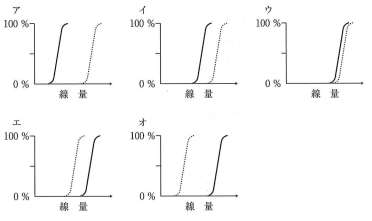

放射線治療は、機能と形態を温存できる生体にやさしい治療法である。目的によって以下に分類される。
腫瘍の完全な制御（治癒）を目指す治療。密封小線源治療は根治を目的とする場合がほとんど。外部照射は化学療法との併用で行われることが多い。
根治性はないが、患者のQOL向上を目的とする治療。放射線治療の7割ほどがこの目的で使用されている。
放射線治療の効果を評価する重要な指標。
TCP曲線とNTCP曲線の間隔が広いほど治療可能比が大きい
→ 正常組織を守りながら腫瘍を制御できる「治療の窓」が広い
※ 2曲線が重なると、腫瘍を制御しようとすると正常組織も障害される
| 因子 | 影響 |
|---|---|
| ラジカルスカベンジャー | DNA損傷量を低下させ、放射線感受性を下げる |
| DNA修復能 | 修復能が高いと放射線抵抗性になる |
| 細胞周期 | M期・G2期後半が最も感受性が高い、G0期・S期後半は低い |
| 因子 | 特徴 |
|---|---|
| 酸素効果 | 低酸素状態では放射線抵抗性↑（OER：酸素効果比 ≒ 3） |
| 線量率効果 | 短時間照射の方が細胞ダメージ大（回復の時間がない） |
| 線質（LET） | 高LET放射線（重粒子線など）は生物学的効果大 |
| 温熱効果 | 加温により放射線感受性↑ |
放射線治療では通常、総線量を分割して照射する（分割照射）。これにより正常組織の障害を軽減しつつ腫瘍を制御できる。
| 4R | 内容 | 効果 |
|---|---|---|
| Repair （回復） |
亜致死損傷からの回復 | 正常組織は回復が速い → 正常組織保護 |
| Redistribution （再分布） |
細胞周期の再分布 | 感受性の高いM期・G2期に再分布 → 腫瘍制御↑ |
| Reoxygenation （再酸素化） |
低酸素細胞への酸素供給 | 低酸素細胞が酸素化 → 放射線感受性↑ |
| Repopulation （再増殖） |
腫瘍細胞の加速再増殖 | 治療期間が長いと腫瘍が再増殖 → 不利 |
放射線治療における腫瘍治癒率曲線を実線で、正常組組織障害発生率曲線を点線で図に示す。
治療可能比が最大なのはどれか。1つ選べ。

【解説】治療可能比は、腫瘍治癒率曲線（実線）と正常組織障害発生率曲線（点線）の間隔が最も広いところで最大となる。アは2曲線の間隔が最も広く、治療可能比が最大。オに向かうほど2曲線が接近し、治療可能比は小さくなる（腫瘍を制御しようとすると正常組織も障害される）。
悪性腫瘍に対する緩和照射で正しいのはどれか。1つ選べ。
【解説】緩和照射は根治（治癒）を目的としない（b×）。患者のQOL向上が目的で、疼痛軽減（骨転移による痛みなど）が最も代表的な適応（a○）。易出血性の改善も緩和照射の目的になりうる（c△）。化学療法併用は必須ではない（d×）。緩和目的なので標準治療より少ない線量で行う（e×）。